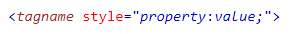
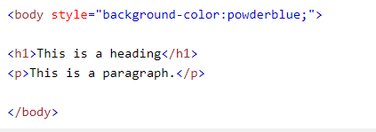
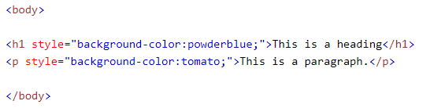
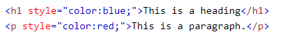
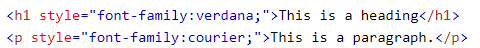
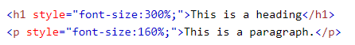
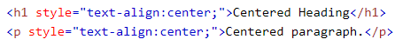
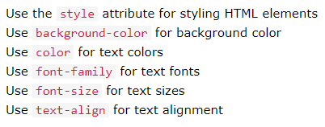

Inline CSS is written using the "style" attribute inside of an HTML tag.
It is called "inline" because the "style" specified only directly affects the tag/ line of code they are written in.
Look at the example below for the syntax.

The property is a CSS property. The value is a CSS value.
The "style" attribute is just like any other HTML attribute. It goes inside the element's start tag, right after the tag name.
Inline CSS Examples
Take a look at the following examples of inline CSS in action.
The CSS background-color property defines the background color for an HTML element.


Background color
The CSS color property defines the text color for an HTML element.

Text color
The CSS font-family property defines the font to be used for an HTML element.

Fonts
The CSS font-size property defines the text size for an HTML element.

Text size
The CSS text-align property defines the horizontal text alignment for an HTML element.

Text alignment
The following list summarizes the main inline CSS properties to know.

Summary of inline CSS styles
Inline CSS Exercises
Customize this page with INLINE CSS in CodePen!
Follow this link to style this page with inline CSS. Follow the steps below to style the page:
Use the correct HTML attribute and inline CSS to set the color of each paragraph to "blue".
Use CSS to set the font of each paragraph to "courier".
Use CSS to center align each paragraph.
Use CSS to set the text size to 50 pixels.
Use CSS to set the background-color of the page to yellow.
Use CSS to center align the whole page.
Once you are DONE, save your CodePen document as "Your Name- Inline CSS Exercises". Hit "share" (bottom righthand corner of the screen). Send the link to Blackboard's chat for Professor Page's review.
Inline CSS References
Use these references to help with understanding inline CSS: